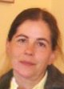
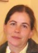

Then, one night on my way home from the bakery (from my night shift), beneath a lamp post I stopped and asked myself: "Eric, what do you want to do with your life?". A few weeks back I had brought out my old highschool math books and realized that I should pursue this further. So I descided that I should apply for studying mathematics at the university. The interrupted natural sciences highschool education was completed and an application to the Gothenburg University natural sciences program was approved. At the time of finishing the basic education I saw an advert where the (at that time extremely secret) National Defence Radio Establishment, FRA, announced a position as cryptographer. I thought this sounded really entizing but I descided to continue studies at the University with an agreement from FRA to be in touch again after the Ph.D.
As a Ph.D. student I took on the subject of change-point detection and the Ising model in spatial statistics. I was supervised professor Marianne Frisén and post doc Aila Särkkä taught me the essentials of change-point detection and spatial statistics respectively and who patiently adviced me into the scholar I then became. I learned that change-point detection (the science of e.g. how to account for a sudden random probabilistic changes in a sequence of random variables) can be applied in an abundence of disciplins and solving a variety of problems. The Ising model, however, in spite of having a simple dependence structure is surprisingly difficult to analyze. Also, it was originally suggested for explaining the physics phenomenon of spontaneous magnetization but had found little, if any, applications in the real world for solving actual problems. In 2000 I got my Ph.D. in statistics. The connection with FRA was revived and I was very close to starting there but in the end it required me to move to the Swedish capitol and that was not so tempting. Instead, after my 12 years visit to Gothenburg, I got a posistion as a guest lecturer at Halmstad University and 2005 I got my tenure as a mathematical statistics lecturer there.
A few years later professor Ljudmila Bordag was recruited to Halmstad University as a leader of mathematics education and science.
 
 Feeling out of place like a fish on dry land I was looking for problems in research where I could make a contribution. I struggled with this for some time and skimmed through the first book about Markov random fields by Ross Kindermann and Laurie Snell. Absentmindedly and with low expectations, I came to the last chapter (about applications) which I was not that interested in and had skipped in my previous reading. To my astonishment I then learned that the stock market was one of the few fields of application of the Ising model. It served as an excellent way of explaining the erratic behaviour among trading agents influencing each other in selling and buying which may lead to unpredictable volatility clusters (i.e. periods of nervous market and large uncertainties). A stimulating period of many conferences and inspiring collaborations followed.
After five years, professor Bordag was offered a tempting position at Zittau University, Germany, and moved back to Leipzig. Having lost its leader there was no possibility in carrying on with the financial mathematics master's programme so it was cancelled and all research in this field at Halmstad University died with it. Again, I was stumbling in scientific darkness for an application environment to cling to.
Then, a colleague from the computer science department asked me if I could give a course about cryptography. Of course this struck the old cryptography string inside me but being no expert in the field I hesitated. Still, after some persuation, I dug my teeth into various crypto literature. One year later my first thesis student in IT forensics was awarded best IT forensics thesis and another few years later I went to an IEEE conference in Paris where a student presented her thesis and for that won the best session awad. Since then I developed the cryptography course, a mathematics and statistics course, a Python programming course in the IT forensics programme and supervised 50 more bachelor theses and authored some course literature. The enthusiasm and positive attitude among both the students and the staff involved in teaching in the courses constitute an unbeatable force for contributing in this activity in collaboration with the Swedish police force and police from other countries. I am very grateful for the opportunity to participate in this IT forensics adventure. Currently and a few years since, I have also collaborated in research projects about health technology with many colleagues from the department of Intelligent Systems and Digital design. Always new challenges in an everchanging scientific environment.
Indeed, I also have some life apart from the academic. My greatest favourites in rock and pop are Black Sabbath, Nazareth, Uriah Heep, Led Zepelin, Pink Floyd, JJ Cale, Mike Oldfield, 10cc, Clash and Stiff little fingers to mention few.
Some favourite film directors are Stanley Kubrick, Roman Polanski, Brian de Palma, Jiri Menzel, Quentin Tarantino, Dennis Hopper, David Lynch, David Cronenburg, Martin Scorcese, Orson Wells, Pedro Almodovar, Ettore Scola, Jean-Jacques Beineix, Luc Besson, Jim Jarmush, Bill Forsyth and Terry Gilliam, no particular order of relevance.
I guess that is enough of narcissism and introvert studies for now. I have no idea what the future has in it for me but I sure hope I will be able to contribute and participate in the academic environment I have been forunate to be in.